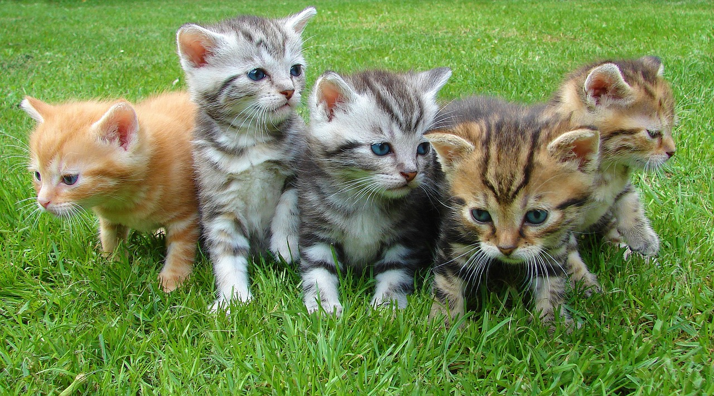

¡Bienvenido al mundo de los mininos!
Descubre el mundo mágico de los gatitos en MUNDO MICHI. Te ofrecemos una mezcla única de información y una gran dosis de ternura felina. Ya sea que estés buscando adoptar, aprender más sobre mininos, o simplemente disfrutar de las fotos más adorables, ¡estás en el lugar correcto! Déjate conquistar por los gatitos más lindos de internet.
Si quieres saber más sobre los comportamientos más comunes en esta especie, este artículo es para ti.
- Los gatos prefieren las alturas.
- Juegan al escondite.
- Los gatos son unos dormilones.
- Dejan su aroma.
- Dulces ronroneos.
- El maullido, su señal.
- Jugar cazando.
- Limpios con sus cosas.
- La vida amasando.
- Pero mira como beben
A los gatos les encanta las alturas, así que prepárate para encontrarlo encima de mesas o estanterías. Con un poco de imaginación y un toque de bricolaje puedes crear una divertidas estanterías por las que trepará y verá el mundo desde otra perspectiva.
A los gatos les encanta “esconderse” para descansar. No hay gato que pueda resistirse a un cajón abierto o al fondo del armario. Posiblemente esta conducta se deba a la necesidad de sentirse seguros cuando descansan.
Pueden llegar a dormir unas 16 horas al día, pero eso si, repartidas durante todo el día en formato siesta.
Cuando se rozan contigo o con los muebles, en realidad lo que hacen es impregnar con su olor el entorno para sentirse más seguro.
Los solemos identificar siempre con un buen estímulo, pero debes saber que también pueden ronronear cuando se encuentran enfermos o doloridos.
El maullido del gato es muy diverso y no tiene sólo un sentido, los gatos pueden maullar para llamar tu atención por ejemplo cuando tiene hambre o cuando está atrapado, sin embargo, los gatos adultos pueden llegar a utilizar un código de comunicación única entre el dueño y él mismo.
Les encanta jugar, su juego favorito está relacionado con la caza: perseguir una pelota, atrapar un cordel, sacar un juguete de debajo del sofá, golpear con las patas traseras un peluche y…, sobre todo cuando hay pocas ocasiones de juego, acechar y perseguir la primera persona que pasa delante de su escondite.
Los verás enterrando sus deposiciones con el sustrato muy limpiamente en su bandeja, pero… ¡cuidado!, la tierra de las macetas puede ser un lugar tremendamente apetecible para hacer sus cositas.
Lo hacían con su madre cuando estaban siendo amamantados y siguen haciéndolo cuando son adultos. Normalmente utilizan superficies blandas y alguna que otra vez tu cuerpo. Es una experiencia genial.
Los verás beber del plato de la maceta, del lavabo o de un grifo abierto, puede que no beban del bebedero que le has preparado si está muy cerca de la comida o de la gatera.
¿Verdad que son todo un mundo?, la mayoría de estos comportamientos los experimentarás en tu propia cuenta y otros tantos puede que no los hagan aunque en su gran mayoría, son comportamientos muy comunes. Si tu gato tiene otras conductas curiosas propias de la especie no dudes en dárnoslo a conocer. Esperamos que te haya servido de ayuda y que puedas aclarar algunas dudas que puedan surgir sobre estos misteriosos y bellos animalitos.